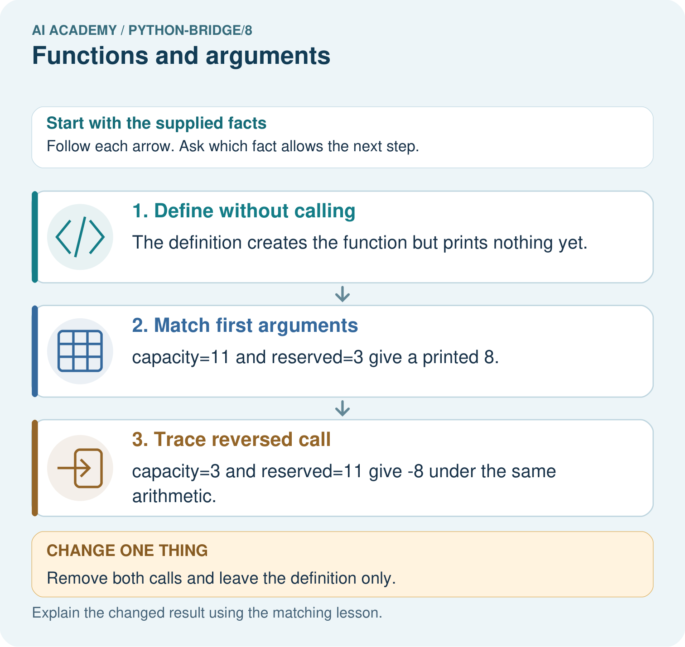
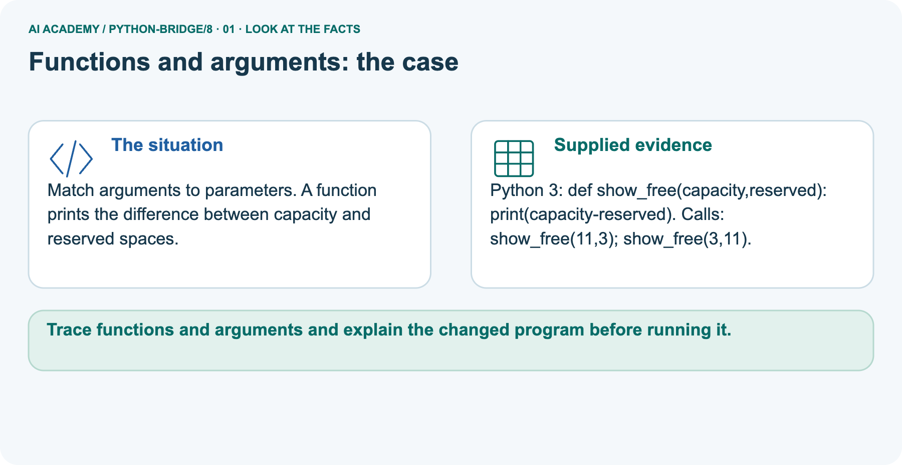
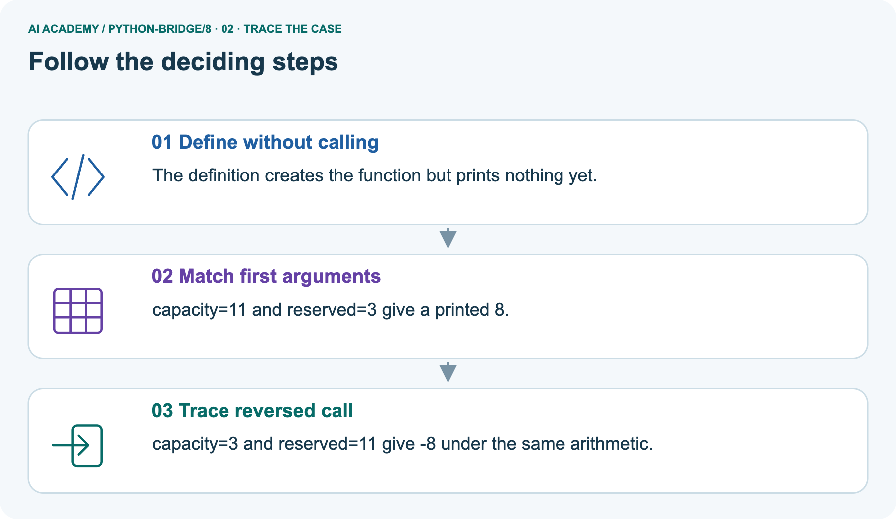
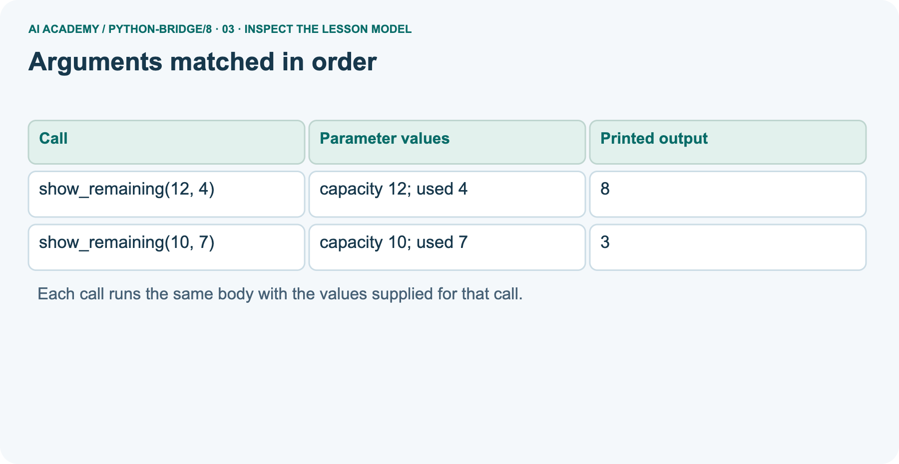
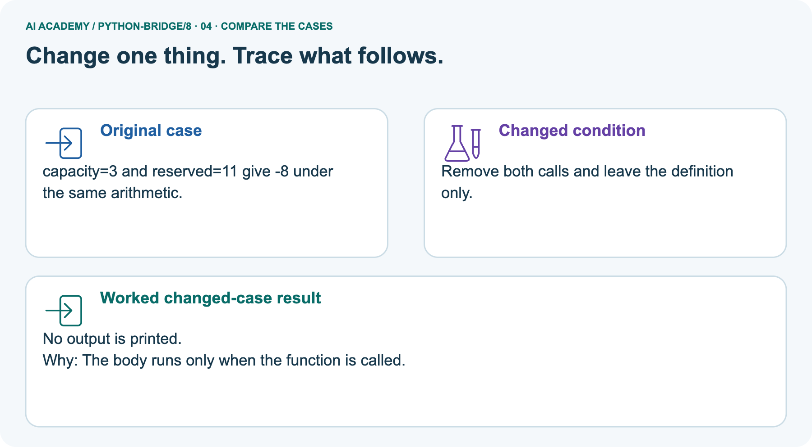
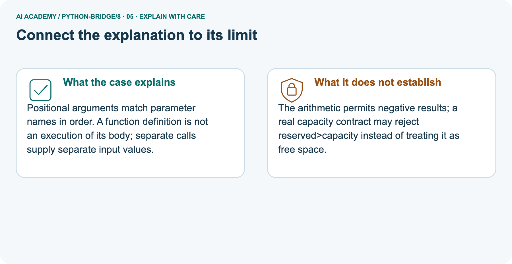
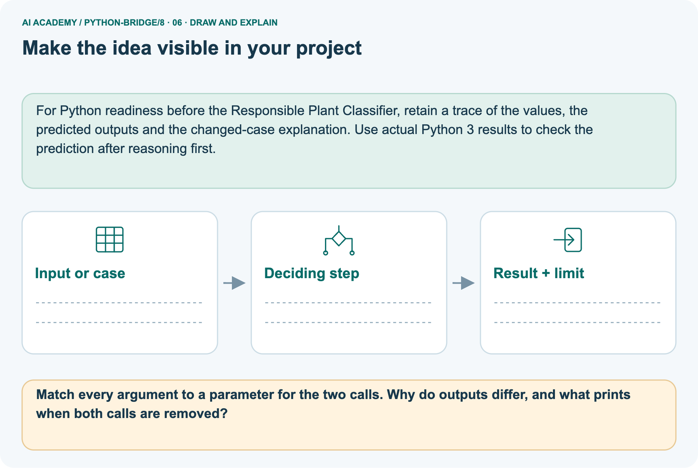

AI Academy · Python readiness bridge · Workbook
Functions and arguments
Learn to understand, design, build, test and explain AI systems responsibly.
Project: Python readiness portfolio
THE CONNECTED WEEK
One connected function-and-argument record.
Explain the definition, trace calls, repair fixed constants and state the input assumptions.
Keep one habit: Keep contract, parameter mapping, call order, returned/printed distinction and observed evidence together.
Main lesson · Section 1
Recall · Retrieve before notes
Keep the stated task, its own code/values and support record together.
Task and evidence record
Try the recall before opening notes. Then use a different colour or a labelled second line to correct your explanation.
Without opening the old lesson, explain one key idea from Lists and indexing. Give an example and a mistake that the idea helps you avoid.
Without opening the old lesson, explain one key idea from Branching and boundary tests. Give an example and a mistake that the idea helps you avoid.
Without opening the old lesson, explain one key idea from Values variables and types. Give an example and a mistake that the idea helps you avoid.
Lists and indexing
Branching and boundary tests
Values variables and types
Main lesson · Section 5
W1 · Explain the procedure
Keep the stated task, its own code/values and support record together.
Task and evidence record
Main printing function show_remaining(capacity,used) assumes nonnegative integers with used<=capacity. W2 calls(8,3),(8,8),(8,0)print5,0,8. Definition alone no output; missing required argument raises TypeError. Faulty body 12-4 ignores inputs. Separate picture show_free(11,3)/(3,11)prints 8/-8 to show arithmetic order, not valid negative free-space.
Return preview hands numeric value to caller; outer print displays it.
In def show_remaining(capacity, used), identify the function name and parameters. In show_remaining(15, 6), identify the arguments and their matching parameters.
Main lesson · Section 6
W2 · Predict, trace and observe
Keep the stated task, its own code/values and support record together.
Task and evidence record
Main printing function show_remaining(capacity,used) assumes nonnegative integers with used<=capacity. W2 calls(8,3),(8,8),(8,0)print5,0,8. Definition alone no output; missing required argument raises TypeError. Faulty body 12-4 ignores inputs. Separate picture show_free(11,3)/(3,11)prints 8/-8 to show arithmetic order, not valid negative free-space.
Return preview hands numeric value to caller; outer print displays it.
Reference for this exercise: open this week’s student lesson, “Functions and arguments”, at “See how it works” and “Follow a worked example”. Use the original worked values or code named in the question; the later pictorial case is a separate example. Keep this reference beside your workbook while practising.
Using the correct definition, predict show_remaining(8, 3), show_remaining(8, 8) and show_remaining(8, 0) in that order. Explain what happens if the file contains only the definition.
Main lesson · Section 7
W3 · Find the first error
Keep the stated task, its own code/values and support record together.
Task and evidence record
Main printing function show_remaining(capacity,used) assumes nonnegative integers with used<=capacity. W2 calls(8,3),(8,8),(8,0)print5,0,8. Definition alone no output; missing required argument raises TypeError. Faulty body 12-4 ignores inputs. Separate picture show_free(11,3)/(3,11)prints 8/-8 to show arithmetic order, not valid negative free-space.
Return preview hands numeric value to caller; outer print displays it.
Reference for this exercise: open this week’s student lesson, “Functions and arguments”, at “Find and repair a mistake”. Use the original worked values or code named in the question; the later pictorial case is a separate example. Keep this reference beside your workbook while practising.
The faulty body calculates 12 - 4 regardless of the call. State the output and expected output for show_remaining(11, 2). Repair the expression and name an earlier call to rerun.
Main lesson · Section 9
W5 · State an honest limit
Keep the stated task, its own code/values and support record together.
Task and evidence record
Main printing function show_remaining(capacity,used) assumes nonnegative integers with used<=capacity. W2 calls(8,3),(8,8),(8,0)print5,0,8. Definition alone no output; missing required argument raises TypeError. Faulty body 12-4 ignores inputs. Separate picture show_free(11,3)/(3,11)prints 8/-8 to show arithmetic order, not valid negative free-space.
Return preview hands numeric value to caller; outer print displays it.
The correct subtraction function prints -1 for show_remaining(4, 5). Does successful execution make this a valid cupboard record? Explain what the function assumes and what needs checking.
Main lesson · Section 4
Try alone · Selected independent task
Keep the stated task, its own code/values and support record together.
Task and evidence record
Predict both returned and printed values, showing which argument supplies first and second. What is displayed if the program contains only the function definition and no calls?
Why does swapping these arguments change the result?
Attempt this case before feedback. Record any help. Earlier examples below are further practice; a case already practised with feedback cannot establish fresh transfer.
Independent case: Match positional arguments to parameters
def difference(first, second):
return first - second
print(difference(11, 4))
print(difference(4, 11))
Main lesson · Section 10
Project · Keep code and evidence
Keep the stated task, its own code/values and support record together.
Task and evidence record
Add a labelled functions and arguments evidence sheet to Python readiness portfolio. Show how you can distinguish a function definition from a function call.
Use the supplied fictional case and keep its inputs, intermediate steps, calculation or prediction, and limitation. Connect this record to last week’s record; a matching answer without a trace is insufficient.
Main lesson · Section 11
Feedback · Repair and return
Keep the stated task, its own code/values and support record together.
Task and evidence record
Revisit this idea with your teacher after a delay. Familiarity is different from explaining and using it on a changed case.
| Evidence | My record |
|---|---|
| Worked alone / hint / model | |
| First step I repaired and why | |
| New case checked later; date and result | |
| What I can now explain without notes | |
| One remaining question |
Reference bank and extra practice
Choose the reference that helps your next step.
Reference · Supported W2 record
Reference · Section 2
Reference · Supported W2 record
Keep the stated task, its own code/values and support record together.
Task and evidence record
Use W2: Follow the execution order for Functions and arguments. Record the answer once; the lesson and workbook refer to the same attempt.
| Given inputs | Procedure I chose | Middle steps | Result and check |
|---|---|---|---|
Extra practice · Individual reasoning check
Reference · Section 3
Extra practice · Individual reasoning check
Keep the stated task, its own code/values and support record together.
Task and evidence record
Use the worked case for Functions and arguments. Proposed explanation: “Writing def runs the body immediately”. Decide whether this explanation is supported.
Point to the step or supplied fact that decides; explain your repair if needed.
Additional practice · Earlier W4 transfer
Reference · Section 8
Additional practice · Earlier W4 transfer
Keep the stated task, its own code/values and support record together.
Task and evidence record
Each sealed box contains 6 counters. Define show_stock(boxes, loose) to print the total counters using its two parameters. Assume nonnegative integer arguments. Call it with (3, 2), (0, 2) and (3, 0).
Predict each output and explain why show_stock(2, 3) is a different case.
Extra practice · Pictured case
Reference · Section 12
Extra practice · Pictured case
Keep the stated task, its own code/values and support record together.
Task and evidence record
Match arguments to parameters. A function prints the difference between capacity and reserved spaces.
Python 3: def show_free(capacity,reserved): print(capacity-reserved). Calls: show_free(11,3); show_free(3,11).
Match every argument to a parameter for the two calls. Why do outputs differ, and what prints when both calls are removed?
Support used: alone / hint / worked example. This record is practice evidence.
Project connection: For Python readiness before the Responsible Plant Classifier, retain a trace of the values, the predicted outputs and the changed-case explanation.
Use actual Python 3 results to check the prediction after reasoning first.



Reference · Project portfolio milestone
Reference · Section 13
Reference · Project portfolio milestone
Keep the stated task, its own code/values and support record together.
Task and evidence record
Project: Python readiness portfolio
Current milestone: Python readiness portfolio. Keep runnable code, predictions, actual outputs, one repaired error and an explanation of a function on changed inputs.
For Python readiness before the Responsible Plant Classifier, retain a trace of the values, the predicted outputs and the changed-case explanation. Use actual Python 3 results to check the prediction after reasoning first.
| Evidence to keep | My record |
|---|---|
| This week’s input and deciding step | |
| Prediction and actual result (or labelled paper trace) | |
| One change since the previous checkpoint and why | |
| One error or limit and the next test |
Extra practice · Predict, check and repair
Reference · Section 14
Extra practice · Predict, check and repair
Use only after an attempt; keep the reserved assessment separate.
First question and hint
Match arguments to parameters. A function prints the difference between capacity and reserved spaces.
Which labelled step matches this detail? capacity=3 and reserved=11 give -8 under the same arithmetic.
1. Match first arguments
2. Trace reversed call
3. Define without calling
Hint if needed: Read the steps in the pictorial case. Match the supplied detail to the stage that performs or records it.
Practice 1: explain the deciding evidence
Check the first explanation
After your attempt, compare with the supported explanation: Trace reversed call capacity=3 and reserved=11 give -8 under the same arithmetic. Positional arguments match parameter names in order.
A function definition is not an execution of its body; separate calls supply separate input values.
Changed-case question and hint
Changed-case practice: Remove both calls and leave the definition only. Which conclusion is supported by the supplied facts?
1. This one example guarantees correct results for every future input.
2. We can decide the result without examining the changed input or the procedure.
3. No output is printed.
Hint if needed: Use the changed condition and the deciding step in the pictorial trace. The answer must say what follows from those facts.
Practice 2: explain the deciding evidence
Check the changed explanation
After your attempt, compare with the supported explanation: No output is printed. The body runs only when the function is called.
Repair and keep the record
Review Lists and indexing (python-bridge/7). Goal: Distinguish a list index from the value stored at that position. Short practice: Label the three index positions.
Predict all original outputs, then name the first output and stopping point after using index 3.. Return to this week and explain what you changed.
Review Branching and boundary tests (python-bridge/5). Goal: Trace the selected branch in an if elif else chain. Short practice: Trace -2, 4 and 5 through the branches.
Explain why the negative check comes first and what label -2 gets if it is removed.. Return to this week and explain what you changed.
Review Values variables and types (python-bridge/2). Goal: Distinguish integer, floating-point, text and Boolean values. Short practice: Predict both print outputs and explain why they differ.
Does count+tag work, and what happens to each valid output after count becomes ten?. Return to this week and explain what you changed.
The browser lab lets you edit the supported Python examples already included in this lesson. Predict first, run, inspect the actual output or error, change one input, then run again.
Keep code, predictions, actual results and a reasoned revision together. On paper, label your result as a trace rather than an execution.
Use Download completed work in the hosted lesson to export your answers, reflections, practice feedback and code-run evidence. Open the HTML copy to read or print it.
Drafts stay in this browser when storage is available; clear drafts on a shared device.
Earlier wording, alternatives and picture transcripts
Use this supported practice once, in the browser or on paper. Keep the reserved independent assessment for a separate first attempt before teacher feedback.
Repair a missing building block
Predict, run and debug
Keep your completed work
Reference · Six-picture response sheets
Reference · Section 15
Reference · Six-picture response sheets
Use the picture relevant to a current gap.
01. Functions and arguments: the case



Match arguments to parameters. A function prints the difference between capacity and reserved spaces. Supplied facts: Python 3: def show_free(capacity,reserved): print(capacity-reserved).
Calls: show_free(11,3); show_free(3,11).
Point to the given fact that matters most. Explain why it matters.
02. Follow the deciding steps



Define without calling: The definition creates the function but prints nothing yet. → Match first arguments: capacity=11 and reserved=3 give a printed 8. → Trace reversed call: capacity=3 and reserved=11 give -8 under the same arithmetic.
Point to each numbered stage and explain which recorded input it uses.
03. Arguments matched in order



Arguments matched in order. show_remaining(12, 4) | capacity 12; used 4 | 8. show_remaining(10, 7) | capacity 10; used 7 | 3
Read the labels and values. Explain the relationship the model shows.
04. Change one thing. Trace what follows.



Original case: capacity=3 and reserved=11 give -8 under the same arithmetic. Changed condition: Remove both calls and leave the definition only. Expected result: No output is printed.
Reason: The body runs only when the function is called.
Predict before checking the worked changed-case result. Name what changed and what the supplied facts allow you to conclude.
05. Connect the explanation to its limit



Positional arguments match parameter names in order. A function definition is not an execution of its body; separate calls supply separate input values.
Limit: The arithmetic permits negative results; a real capacity contract may reject reserved>capacity instead of treating it as free space.
Explain the case, then point to a limit on the claim.
06. Make the idea visible in your project



For Python readiness before the Responsible Plant Classifier, retain a trace of the values, the predicted outputs and the changed-case explanation. Use actual Python 3 results to check the prediction after reasoning first.
Draw your input, deciding step, result and limit. Supported question: Match every argument to a parameter for the two calls. Why do outputs differ, and what prints when both calls are removed?
Draw your project trace and justify the deciding step using evidence.